Documentos organizados
Categorias e pastas reúnem os materiais da equipe. Visualize e baixe os documentos da unidade em diferentes formatos.
Comunicação e gestão interna
A rotina da equipe.
Um só ponto de acesso.
Do acesso aos documentos à publicação de comunicados, a Intranet reúne os recursos do dia a dia em um portal com áreas para usuários e administração. Menos caminhos para encontrar o que a equipe precisa.
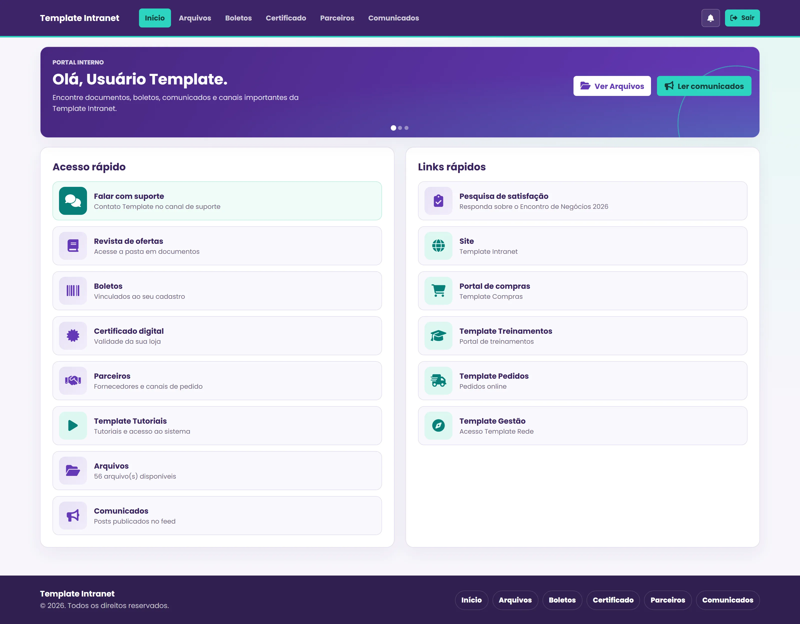
Recursos
Informações e serviços organizados para quem usa a intranet, com ferramentas de gestão para quem mantém os conteúdos e os acessos.
Categorias e pastas reúnem os materiais da equipe. Visualize e baixe os documentos da unidade em diferentes formatos.
Selecione a unidade e consulte competência, vencimento e o último boleto disponível em uma área dedicada.
Consulte a validade, envie o arquivo do certificado e acompanhe sua aprovação pelo mesmo portal.
Encontre fornecedores por categoria, consulte contatos comerciais e acesse os canais de pedido.
Reúna publicações e novidades em um feed, com identificação dos comunicados que ainda não foram lidos.
Gerencie usuários, perfis de acesso e a situação dos cadastros. Organize documentos, parceiros e conteúdos pelo painel administrativo.
Por dentro da aplicação
Explore o portal da equipe, os serviços por unidade e o painel administrativo. Clique nas imagens para ampliar e navegar pela galeria.
Telas demonstrativas com dados fictícios e identidade visual genérica.
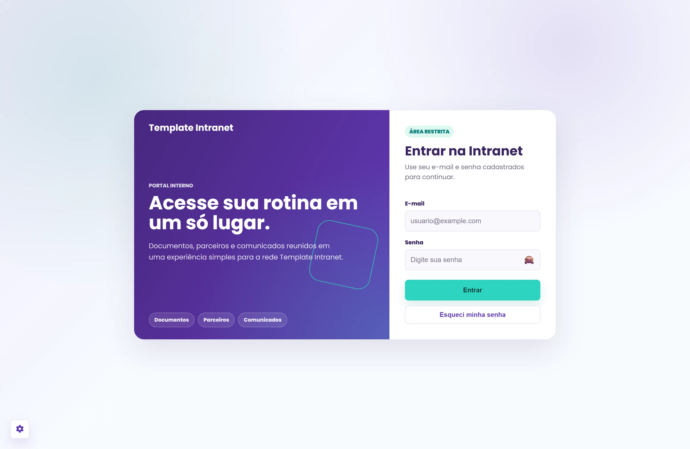
A entrada da intranet com e-mail, senha e opção de recuperação de acesso.
Saudação, destaques e atalhos para os recursos mais usados no dia a dia.
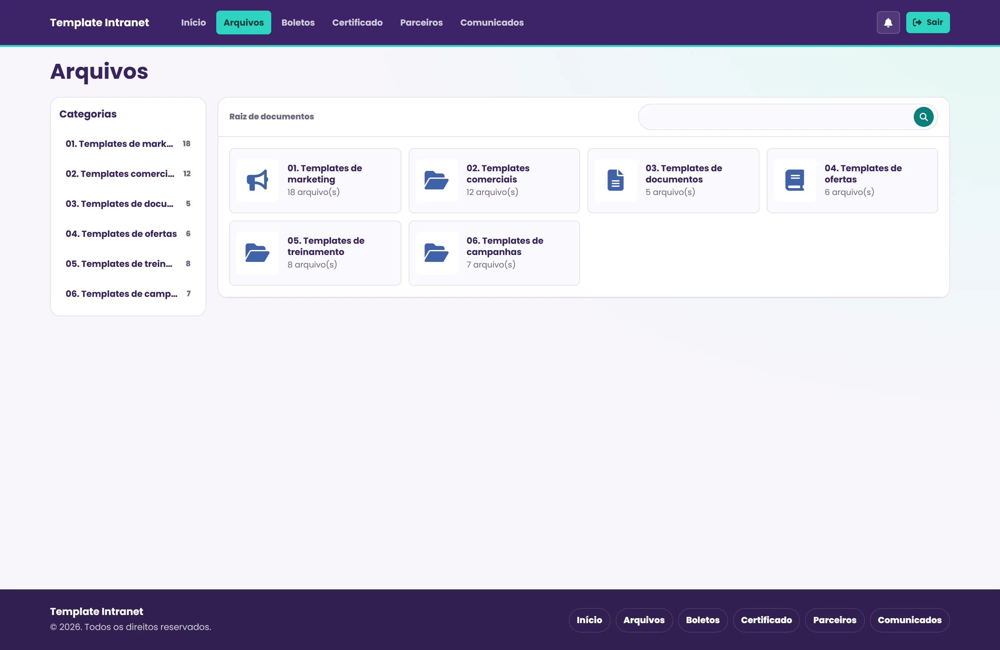
Categorias e pastas organizam os materiais disponíveis para a equipe.
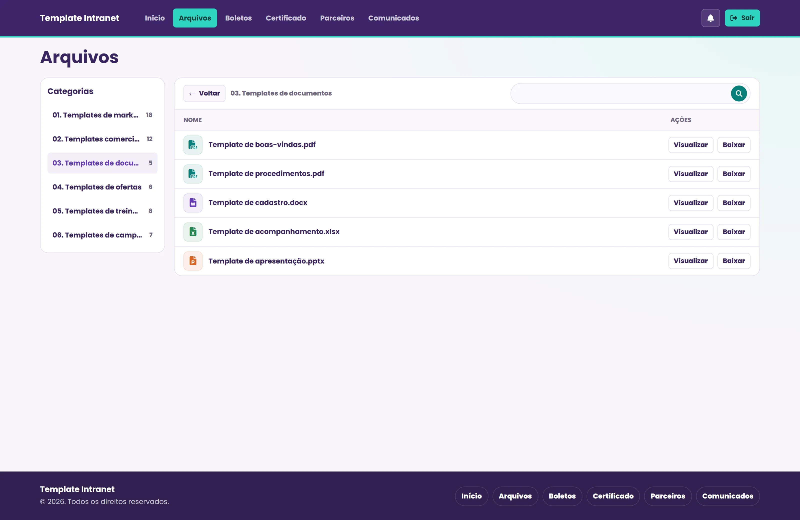
Visualização e download de arquivos em diferentes formatos.
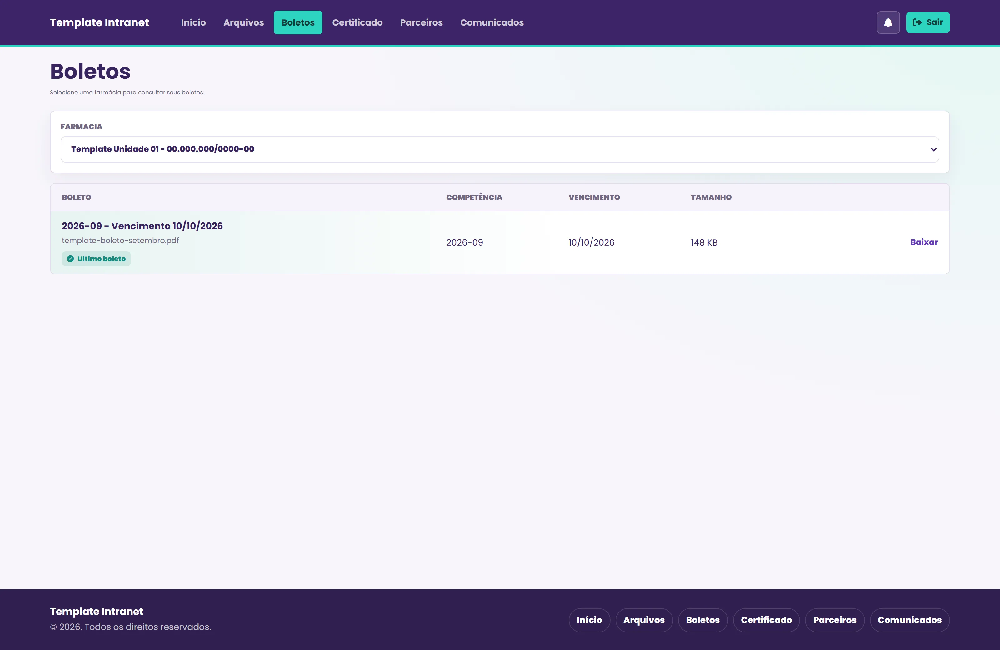
Seleção da unidade, competência, vencimento e acesso ao último boleto.
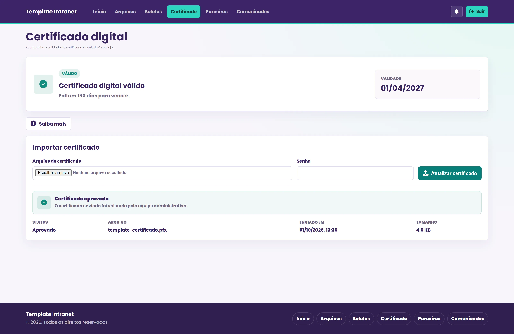
Validade, envio do arquivo e acompanhamento da aprovação do certificado.
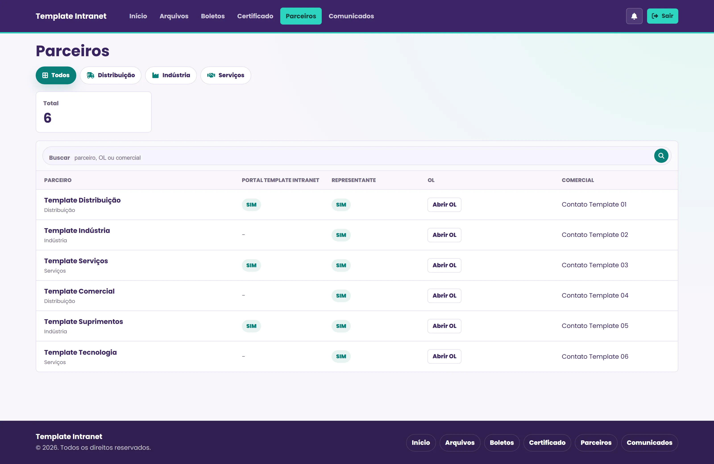
Filtros por categoria, canais de pedido e contatos comerciais em um só lugar.
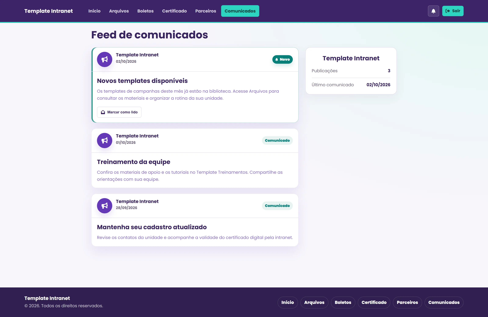
Publicações internas, novidades e identificação de comunicados ainda não lidos.
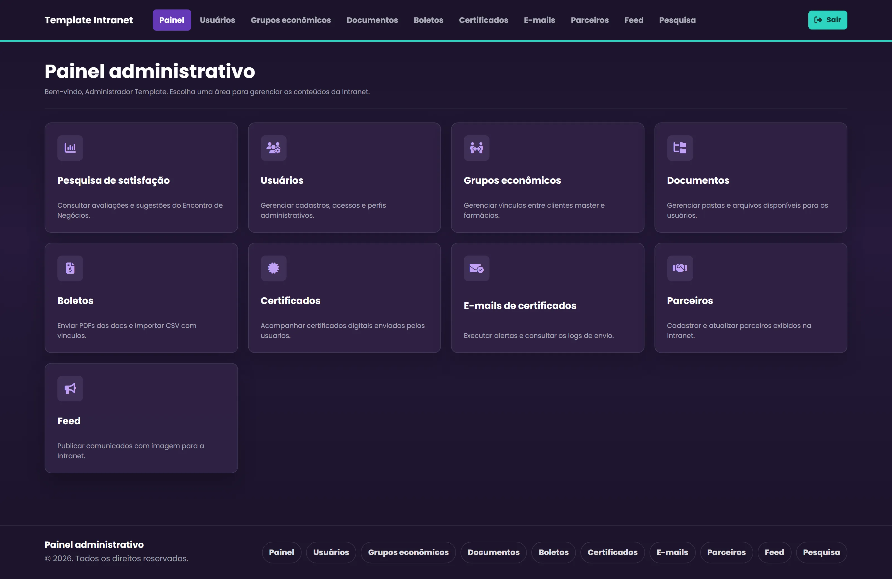
Acesso às áreas de gestão de usuários, documentos, parceiros e conteúdos.
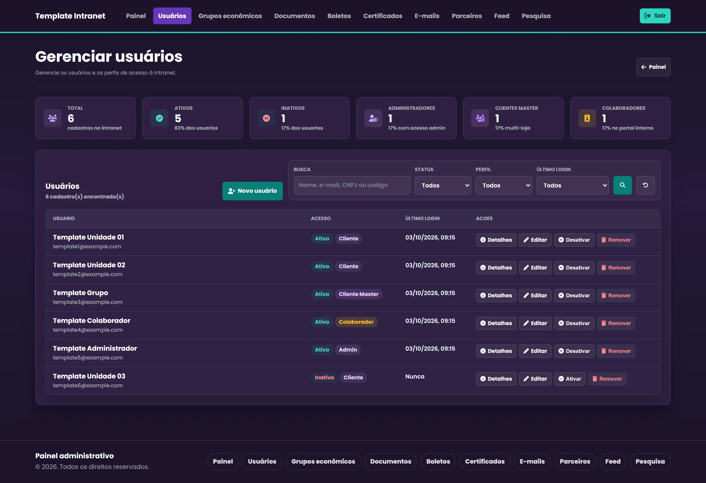
Perfis de acesso, situação dos cadastros, filtros e ações de administração.
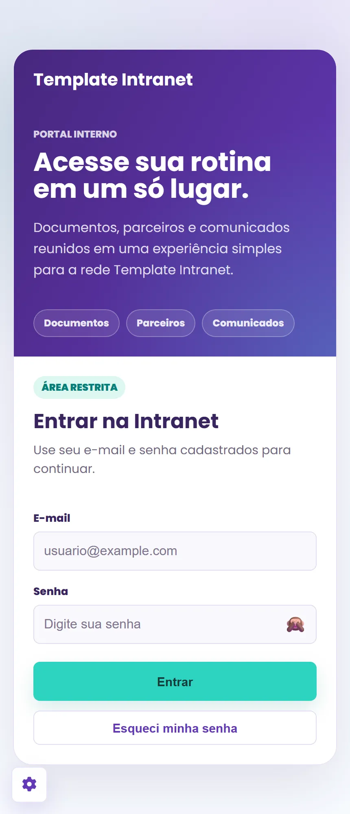
A tela de entrada se adapta à navegação em dispositivos móveis.
Conheça também
Explore a aplicação que reúne indicadores comerciais, gestão de unidades, expansão e análises com inteligência artificial.
Conhecer o FAT